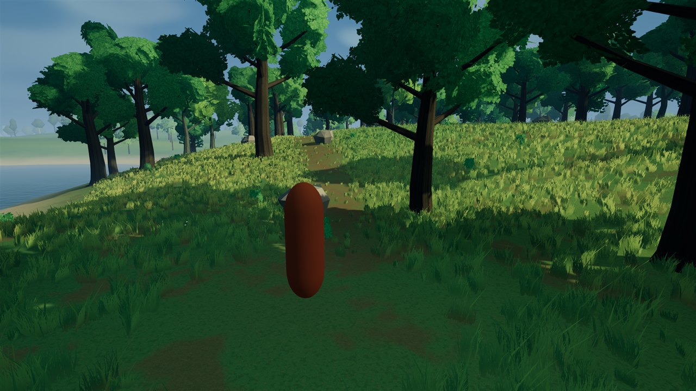
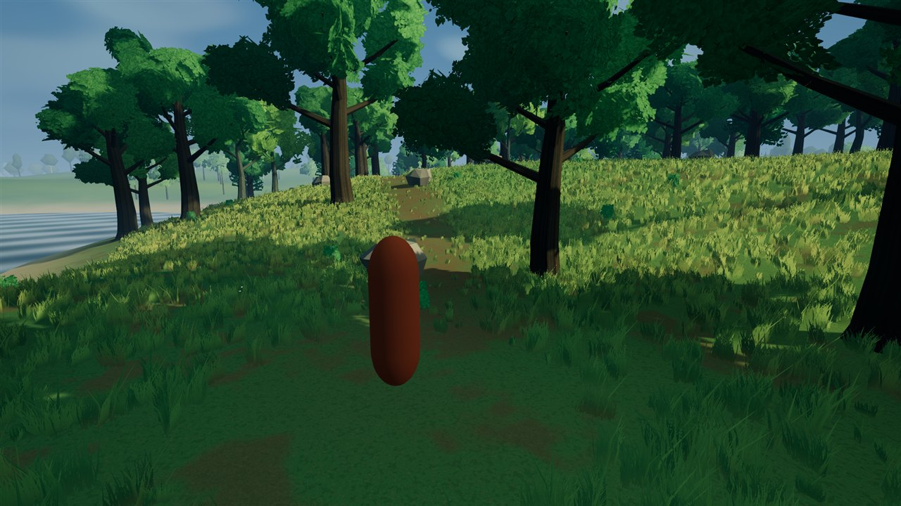
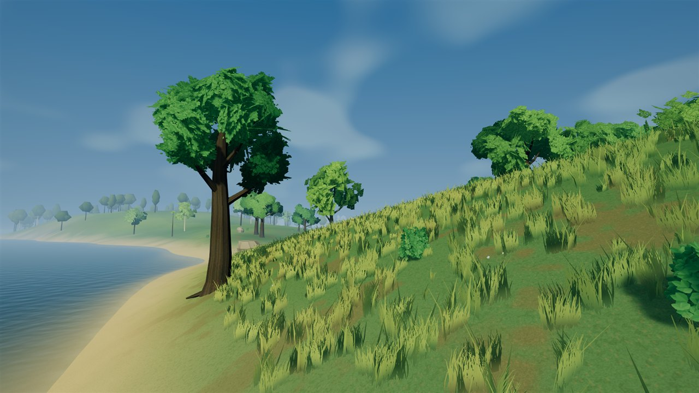
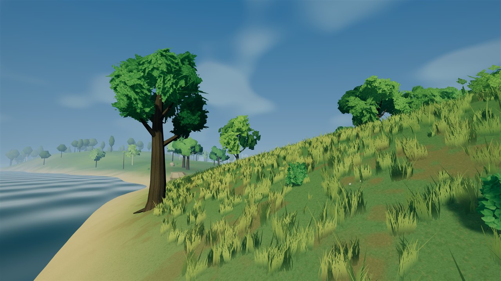
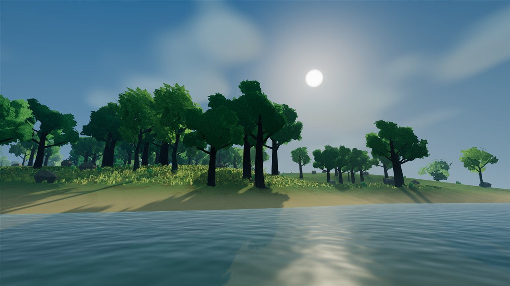
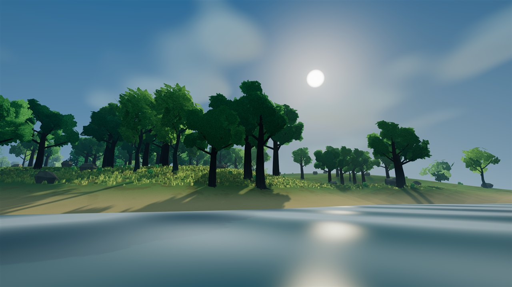
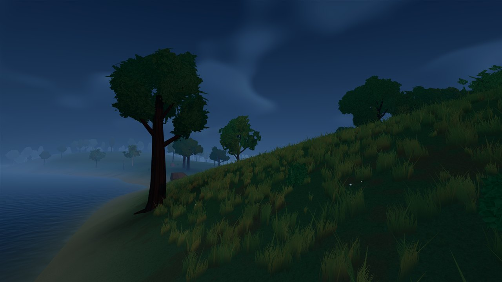
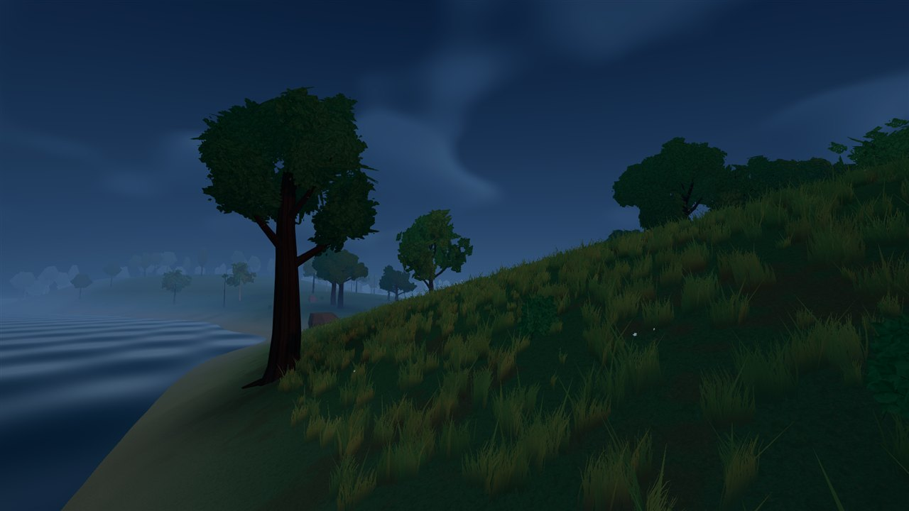

DAY / DUSK / SHORELINE
A softer coastal surface.
Two scrolling noise fields replace the repeated ripple stripes. Depth-based shallow/deep colour, restrained shore foam and a sky-gradient reflection bring the water into the meadow palette. The ocean stays flat and visual only; sea level and gameplay are unchanged.
After images appear first. Tap any image for its full-resolution original. Reflection is an approximation of the sky gradient, not a reflection of scene objects; refraction is not implemented. This website contains screenshots, not a playable mobile game. The previous lighting comparisons remain available.
NORMAL GAME / WATER COMPARISON
Day / ordinary player camera


NORMAL GAME / WATER COMPARISON
Day / shoreline


NORMAL GAME / WATER COMPARISON
Day / distant coast


NORMAL GAME / WATER COMPARISON
Dusk / shoreline


Water in motion
Open the motion capture. This clip illustrates animation; it is not a rendering performance measurement.